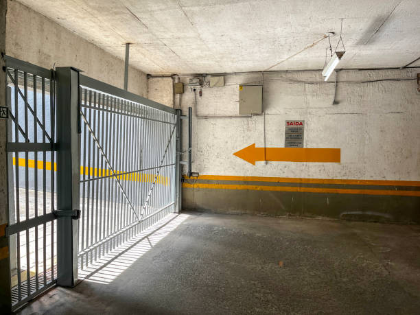
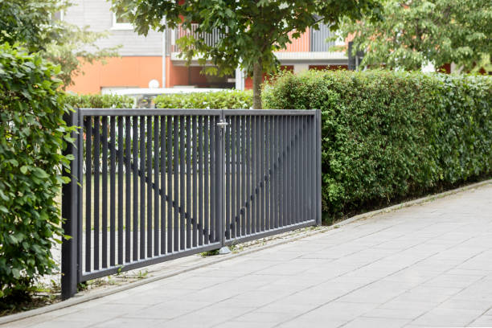
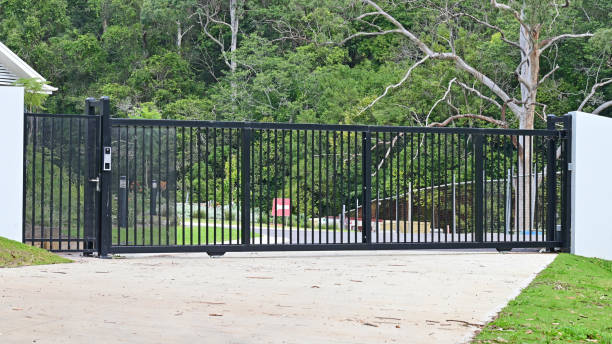
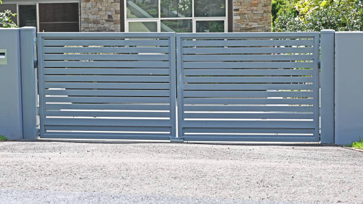
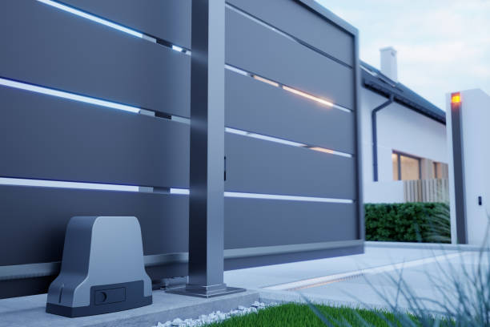
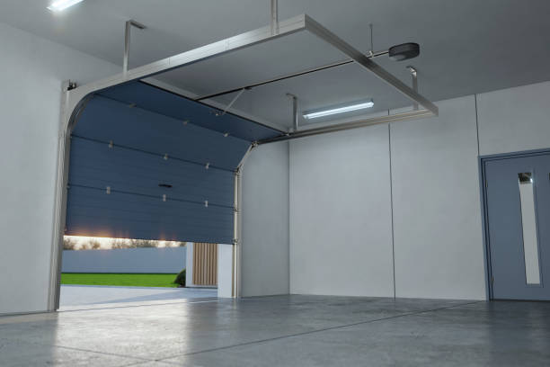
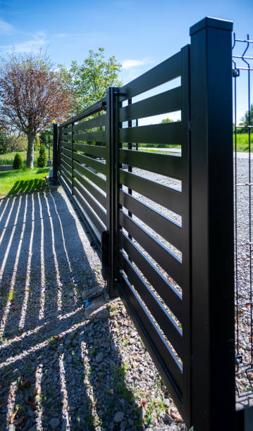

USA - Nationwide
info@securedrivewaygates.pro
USA - Nationwide
info@securedrivewaygates.pro

Facing issues with your automatic gate? Our automatic gate repair services near you are quick and efficient, restoring functionality in no time.
At Secure Driveway Gates, we provide comprehensive driveway gate repair services in Usa - Nationwide, addressing any problems with precision and expertise. From mechanical malfunctions to cosmetic issues, our team is trained to handle a variety of repairs. We focus on delivering high-quality, reliable repairs that restore your gate’s performance and appearance. Our efficient service minimizes inconvenience and ensures your gate functions smoothly. For dependable driveway gate repair, trust us to get the job done right. Contact us now to arrange your repair and restore your gate’s efficiency.
Residential & commercial Driveway Gates
Quality services at affordable prices
Immediate 24/ 7 emergency services


When it comes to enhancing the security and aesthetic appeal of your property, professional driveway gate installation is a critical service we offer at Driveway Gates. Our skilled team specializes in installing high-quality driveway gates that are designed to meet the unique needs of your property. With a variety of styles, materials, and customization options available, we ensure that your new gate not only complements your home’s architecture but also provides the peace of mind you need. From initial consultation to final installation, we handle every detail with precision and care.
Our team understands the importance of a properly installed driveway gate; it is your first line of defense against unwanted intruders and provides an added layer of security for you and your family. Our licensed and certified installers have years of experience, ensuring that your gate operates smoothly and securely. What sets us apart from other service providers is our commitment to quality craftsmanship, competitive pricing, and exceptional customer service. We’re not just installers; we’re your trusted partners in enhancing your property’s security and value.

In the heart of any thriving business lies a commitment to security and professionalism. Our commercial driveway gate installation services are designed to meet the unique demands of businesses in Usa - Nationwide. We understand that a secure entrance is paramount for safeguarding your assets and employees. Our gates combine functionality with style, creating an inviting yet secure entrance. We offer a variety of options including sliding gates, swing gates, and automated systems that ensure easy access for authorized personnel while keeping intruders at bay. Our team of experts assesses your needs and designs a system that integrates seamlessly with your existing security measures. When you choose us for your commercial driveway gate installation, you’re guaranteed quality workmanship, timely service, and unparalleled support.

Imagine driving up to your home or business and having your gate open automatically. That’s the luxury and convenience of automatic driveway gates. Our automatic driveway gates are designed with technology and safety in mind. We offer various options, from simple remote access to advanced gate automation systems that integrate with your home technology. Our team not only installs high-quality automatic gates but also provides support and maintenance to keep them operating flawlessly. With our professionalism and expertise, you can trust us as the top choice for automatic driveway gate solutions in Usa - Nationwide.

When it comes to enhancing your property's curb appeal, nothing beats the uniqueness of a custom driveway gate. We specialize in designing and installing custom driveway gates tailored to reflect your personal style and meet your security needs. Our artisans work closely with you to create a design that complements your home or business aesthetic and provides the functionality you require. Whether you prefer a sleek modern design or a classic ornate look, our team has the experience and skill to bring your vision to life. Let us help you make a statement with a custom driveway gate that stands out from the rest.
Your home is a reflection of your personality, and a custom driveway gate can enhance that expression. We specialize in custom driveway gate installations that cater to your individual style and preferences. Whether you're looking for a modern aesthetic or a classic, elegant design, our craftsmen work closely with you to create a bespoke solution that complements your property . We use high-quality materials, ensuring that your custom gate is not only stunning but also durable. Our expert team manages every detail from design through installation, guaranteeing a seamless addition to your home’s exterior. Choose our custom driveway gate services and turn your vision into reality.

If your driveway gate isn’t opening or closing as it should, the issue may lie with the gate motor. Our driveway gate motor repair services in Usa - Nationwide are designed to get your gate back in operation quickly. Our technicians are skilled in diagnosing motor issues efficiently and not only provide fast repairs but also offer preventive maintenance solutions to avoid future problems.
We understand the inconvenience of a malfunctioning driveway gate, which is why we prioritize prompt, reliable service. Our team uses high-quality parts for fixes and brings years of experience to every repair, ensuring that your gate operates silently and effectively for years to come. Choosing us means putting your trust in experts who care about your safety and satisfaction.

A beautiful residential driveway gate not only adds value to your home but also enhances curb appeal and security. Our residential driveway gates are designed to meet the needs of modern homeowners. We offer a wide range of styles and materials, from elegant wooden gates to robust steel designs, ensuring you find the perfect match for your home. Our team specializes in consultation, offering expert advice to help you choose a gate that fits your aesthetic while providing top-notch security. With us, you’re not just getting a gate; you’re making a lasting investment in your home's value and safety.

Gate openers are the heart of your driveway gate system, and when they fail, it can leave your property vulnerable. Our gate opener repair services in Usa - Nationwide are here to ensure your gate operates smoothly once more. Our experienced technicians are adept at diagnosing a wide range of gate opener problems, from faulty wiring to motor issues.
At Driveway Gates, we pride ourselves on quick response times and effective repairs. We utilize the latest technology to troubleshoot issues and offer durable solutions that extend the life of your gate opener. With a focus on customer satisfaction, we ensure that every repair meets your expectations and enhances your property’s security. Expertise and reliability are the cornerstones of our services, making us the top choice for gate opener repairs.

Finding affordable driveway gate repair services that don’t compromise on quality can be a challenge. At Driveway Gates, we offer competitive rates for driveway gate repair services without sacrificing the quality of work. We believe that everyone deserves to feel secure without breaking the bank. Our trained technicians have the skills and tools needed to diagnose and repair any issues with your driveway gate promptly. From minor repairs to complex issues, we handle it all with professionalism and expertise. When you choose us, you can rest assured that you’re receiving excellent service at an affordable price, ensuring your driveway gate remains functional and secure for years to come.

In the heart of any thriving business lies a commitment to security and professionalism. Commercial driveway gates not only restrict unauthorized access but also enhance the image of your business. At Driveway Gates, we specialize in commercial driveway gate installation in Usa - Nationwide. Our team understands the unique security needs of businesses and is committed to providing high-quality solutions that fit your requirement perfectly. We offer various materials and styles that reflect professionalism while ensuring durability and security. Our installation process is efficient, minimizing disruptions to your daily operations. Trust us to enhance your business's security and aesthetics with our expertly installed commercial driveway gates.

When considering a driveway gate installation, you want the best in the business. Our team of professionals has years of experience as the best driveway gate installers in Usa - Nationwide. We pride ourselves on delivering exceptional service, from the initial consultation to the final installation. Our expertise spans various gate designs and technologies, allowing us to recommend and install a gate that perfectly matches your needs. Customer satisfaction is at the forefront of our operations, and we strive to exceed your expectations at every step. If you want a reliable partner for your driveway gate installation, look no further!

Wooden driveway gates bring warmth and charm to any property, making them a popular choice among homeowners. At Driveway Gates, we specialize in wooden driveway gate installation . Our team understands the intricacies of working with wood, ensuring every gate is crafted with precision and care. We offer various designs, from rustic charm to modern aesthetics, ensuring you find the perfect wooden gate for your property. Our installers pay attention to detail and prioritize quality, ensuring your gate is not just beautiful but also durable and functional. With our commitment to excellence and customer satisfaction, you can trust us to transform your property with a stunning wooden driveway gate!

If you are looking for strength combined with style, our iron driveway gate installation services offer the perfect solution. Iron gates are not only robust but also add a sense of grandeur to your property. Our team specializes in custom iron gates, providing a variety of designs that can fit any entrance. We utilize high-quality materials to ensure your gate withstands the test of time while providing maximum security. Over the years, we have built a reputation for excellence, making us the preferred choice for iron driveway gate installation. Let us help you secure your property with style and durability.

When your driveway gate needs repairs, you want a local service that you can trust to respond quickly and effectively. At Driveway Gates, we offer reliable local gate repair services in Usa - Nationwide that prioritize your convenience and security. Our team of experienced technicians is familiar with the common issues that arise with various types of gates, ensuring prompt and efficient service. We serve both residential and commercial clients, making sure every repair is completed with precision and care. By choosing a local provider like us, you ensure fast response times and personalized service. Experience the benefits of our local expertise and let us take care of all your gate repair needs!

Regular maintenance is crucial to preserving the functionality and appearance of your driveway gate. At Driveway Gates, we provide comprehensive driveway gate maintenance services in Usa - Nationwide. Our experienced team performs thorough inspections and servicing to identify potential issues before they escalate. We clean, lubricate, and adjust components to ensure smooth operation and enhance the lifespan of your gate. Our maintenance plans are tailored to your needs, allowing you to choose a schedule that works for you. By entrusting us with your driveway gate maintenance, you can enjoy peace of mind knowing that your property’s entryway remains secure and functional year-round.

Security driveway gates are a critical component in protecting your property against unauthorized access. At Driveway Gates, we specialize in high-quality security driveway gates designed to provide ultimate protection for your home or business. Our gates come with the latest features, including robust locking systems and various automation options, ensuring enhanced security without compromising style. We work with you to understand your specific security needs, offering customized solutions that fit your requirements perfectly. Our professional installation ensures that your security gate operates reliably and effectively, and we provide ongoing support for long-term maintenance. Choose us for security driveway gates that safeguard your property and provide you with peace of mind.

Embrace modern technology with our electric driveway gate installation services . Electric gates provide seamless access with a touch of a button, making them a popular choice among homeowners and businesses. We offer a selection of electric gate styles and operation systems tailored to your preferences. Our team takes pride in delivering professional installation while ensuring safety and functionality are prioritized. Choose us for electric driveway gate installation, and experience the convenience and security that electric gates bring.

Embrace the future of security with our gate automation services . Automating your gate enhances convenience, allowing you to control access effortlessly. Our experts specialize in designing and installing system upgrades that integrate seamlessly with your existing gate structure. We offer various automation options, including remote controls, keypad access, and smart home integration. Our solutions are tailored to meet your specific needs, ensuring safety and convenience at your fingertips. Trust us to automate your gate with cutting-edge technology and professional installation, enhancing your property’s functionality and security.

For those seeking strength and a modern aesthetic, our steel driveway gate installation services are the perfect choice. Steel gates offer unparalleled durability and security, making them a popular option for residential and commercial properties alike. We provide a variety of designs that range from minimalist to ornate, ensuring that your new gate aligns with your style. Our highly skilled installers ensure each gate is fitted correctly and operates flawlessly, providing you with peace of mind and a stunning entrance. Choose us for your steel driveway gate installation and enjoy long-lasting quality and beauty.

Steel driveway gates are renowned for their strength and durability, making them an excellent choice for homeowners seeking high security. At Driveway Gates, we specialize in installing steel driveway gates that offer robust protection while elevating the appearance of your property. Our skilled installers know how to create striking steel gates that are functional and visually appealing.
Our steel gates are designed to withstand the elements while providing peace of mind regarding your property’s safety. We work closely with our clients to ensure the design aligns with their vision, whether you prefer a simple design or intricate details. When you choose us for your steel driveway gate installation, you’re making a choice for quality, security, and professional service.

A malfunctioning driveway gate operator can hinder security and convenience. Our driveway gate operator repair services focus on restoring the functionality of your electric gates. Our technicians are experienced in diagnosing and fixing a range of operator issues, from electrical failures to mechanical blockages. We employ high-quality parts and proven techniques to ensure your gate operator works like new. We are dedicated to providing timely and effective service, allowing you to enjoy the convenience of automated access without interruption. For professional driveway gate operator repairs, choose us and experience the difference in service and support.

When searching for a reliable driveway gate company near you look no further than Driveway Gates. We are a locally-owned company with a solid reputation built through years of dedicated service to our community. Our team is committed to offering high-quality driveway gate services, from installation to repairs, ensuring that your needs are met promptly and professionally.
Our knowledgeable staff is always available to discuss your options and provide tailored solutions based on your requirements. We pride ourselves on excellent customer service, ensuring that your experience with us is as smooth and efficient as possible. With a focus on quality craftsmanship and customer satisfaction, we are the premier choice for all your driveway gate needs .

Automatic sliding gates can provide both security and ease of access, but when they malfunction, it can be a hassle. That’s where our automatic sliding gate repair services come in. We specialize in diagnosing and fixing sliding gate problems promptly to restore the smooth operation you expect. Our experienced technicians understand the complexities of sliding gate mechanics, and we’re equipped to tackle any issue, big or small. Choose our services for reliable and efficient repairs that keep your automatic sliding gate working perfectly.
alooma24id

If your driveway gate operator is not functioning properly, it can lead to security concerns and inconvenience. At Driveway Gates, we provide expert driveway gate operator repair services in Usa - Nationwide. Our skilled technicians are equipped to diagnose a wide range of operator issues, from electrical failures to mechanical malfunctions. We take pride in our timely service and our ability to quickly restore your gate operator's functionality. With a strong focus on customer satisfaction, we offer reliable, transparent service without hidden fees. Let us handle your driveway gate operator repair needs so you can have peace of mind knowing your property is secure and accessible.
USA - Nationwide Driveway Gates Pros
(877) 848-1711
info@securedrivewaygates.pro
09.00 AM - 09.00 PM
09.00 AM - 12.00 PM